iPhone・無料・登録なし
三浦 海の学校 公式アプリ「海学」
海に行かない日も、海となかよく。
毎日の一歩を楽しむ歩数計、1日1枚の海のタロット（占い）、ガチャで出会う海のなかま図鑑。相棒になったなかまが、あなたの日常にもやってきます。
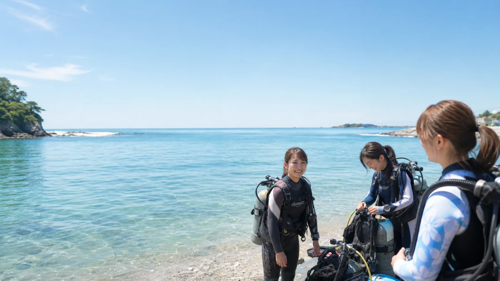
神奈川・三浦半島城ヶ島・宮川湾のダイビングスクール
体験ダイビングからPADIライセンス、ブランク明けまで。インストラクター1名につき最大4名の少人数で、あなたのペースに合わせます。
ひと粒の光が、波になり、海になる。
はじめての人も、ライセンスを取りたい人も、ブランクがある人も、潜る場所を探している人も。
ナレーションと音楽はAIで生成しています。字幕あり。
三浦の海は、10月上旬から昼間の気温よりあたたかくなります。冬は透明度が上がって、海がいちばん青くなる季節。ドライスーツなら、服を着たまま潜れます。
データは気象庁の平年値。ナレーションと音楽はAIで生成しています。
ドライスーツを作ると、ドライスーツ・ダイバーSP講習が半額。
届いた自分の一着で、着方と浮力の取り方から練習できます。
ご注文の受付は12月31日まで
※特典は、2026年12月31日までに三浦 海の学校でドライスーツをお申し込みの方が対象です。ドライスーツの価格はモデルで変わるため、お見積もりは公式LINEでお出しします。お支払いは先払い、オーダー品のためご注文後のキャンセルはできません。「つづける割」とは併用でき、「バディ割」とはどちらか一方です。
友だち追加後、「マイドライ割」と一言送るだけでOKです。見積もりだけでも大丈夫です。
CGを含むイメージ映像です（海中の実写映像を使用）。音楽はAIで生成しています。
映像の中の文字：三浦 海の学校｜ダイビングスクール／この画面の向こうは、海。／品川から京急で、三浦まで 約70分。／京急三崎口駅から無料送迎（要予約）／はじめてでも。ブランクがあっても。／10歳から／教えるのは、プロを育てるプロ。／PADIコースディレクター｜少人数制／タツノオトシゴ・ウミウシ・ミノカサゴ／実写／えらべる、3つの入口。体験ダイビング・ライセンス講習・リフレッシュ／いま、潜ろう。／公式LINEで、いますぐ相談／このサイトから、公式LINEへ／miura-diving.com／神奈川県三浦市・城ヶ島／宮川湾／※CGを含むイメージ映像です（海中の実写映像を使用）
4つの入口から、おすすめのコースと税込の総額が分かります。どれか迷ったら、そのままLINEで聞いてください。
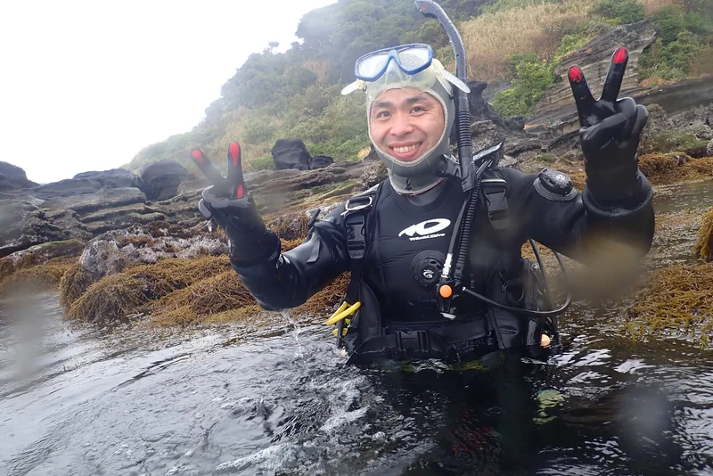
あなたへのおすすめ
¥19,800税込レンタル器材込み・当日の追加費用なし
ボタンを押すと体験ダイビングの空き日程を知りたいです。
がコピーされます。LINEに貼り付けて送るだけ。
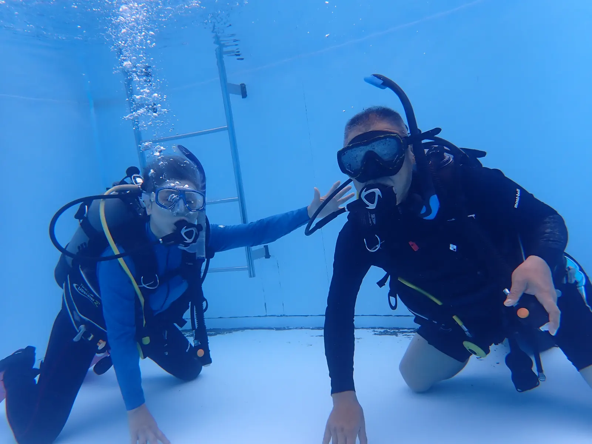
あなたへのおすすめ
¥64,900税込・総額講習費¥53,900＋レンタル器材2日分¥11,000
ボタンを押すとライセンス講習（オープンウォーター）の日程を相談したいです。
がコピーされます。
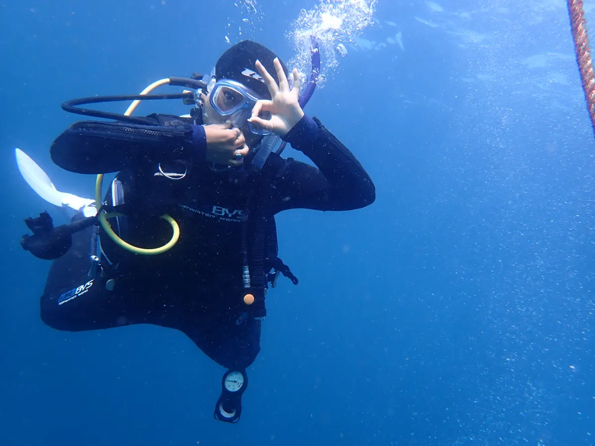
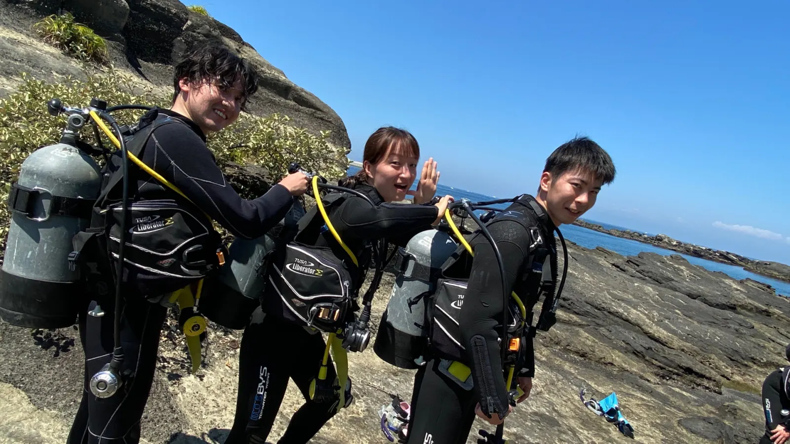
あなたへのおすすめ
ビーチ2本 ¥13,200ボート2本 ¥19,800／ガイド・タンク・ウエイト・保険込み（レンタル別）
ステップアップしたい方はアドバンス講習（総額¥70,800）やスペシャルティ講習もどうぞ。
ダイビング以外なら、スノーケリング（大人¥7,700・器材込み）
その日の海況を見て、いちばん合う海を選びます。スクロールすると、空からの映像が場所ごとに切り替わります。
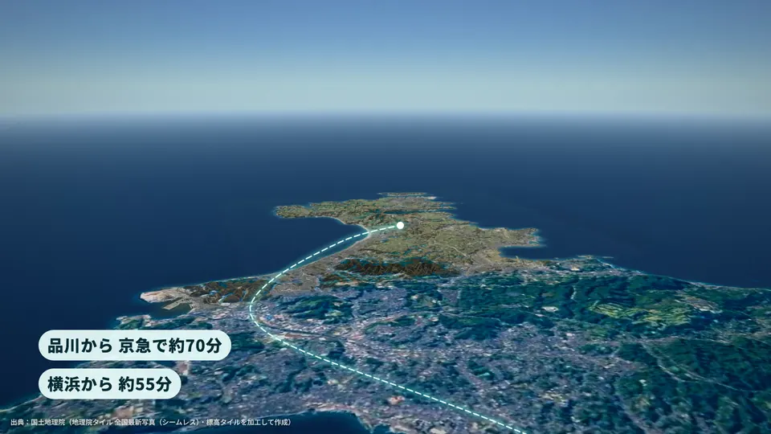
品川から京急で約70分、横浜から約55分。
最寄りは京急「三崎口駅」。駅から開催地までは無料で送迎しています（要予約）。車なら横浜横須賀道路・衣笠ICから約20〜30分です。
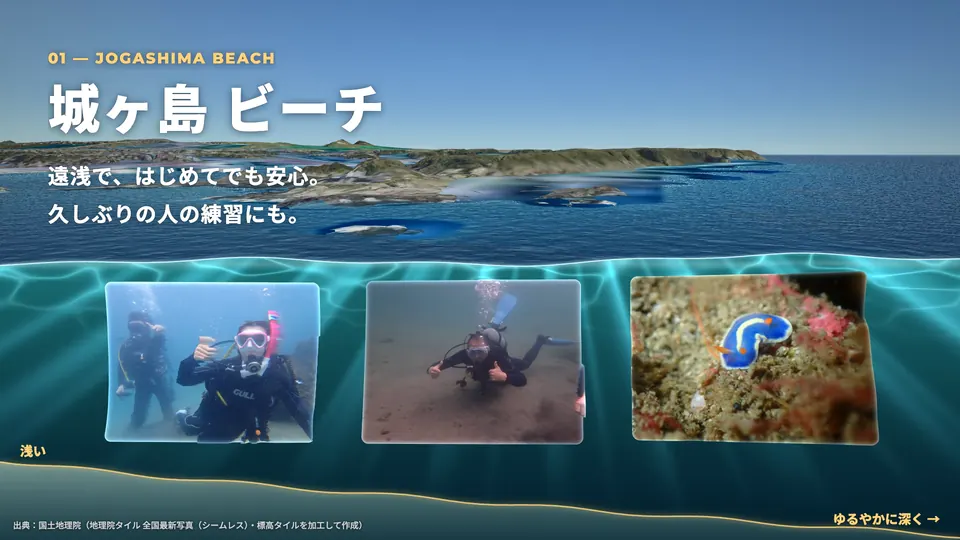
01 — JOGASHIMA BEACH遠浅で、はじめてでも安心。
岸から歩いて入り、ゆるやかに深くなっていく海。体験ダイビングやライセンス講習、久しぶりの方の練習にぴったりです。
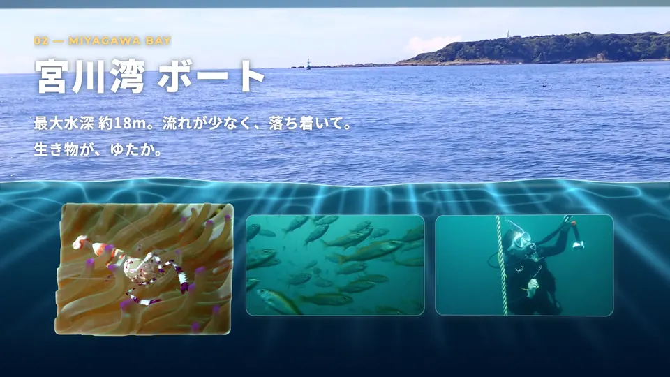
02 — MIYAGAWA BAY最大水深 約18m。流れが少なく、生き物がゆたか。
港から船でわずか5分。カサゴ根・トビ根などのポイントで、落ち着いてじっくり生き物を探せます。
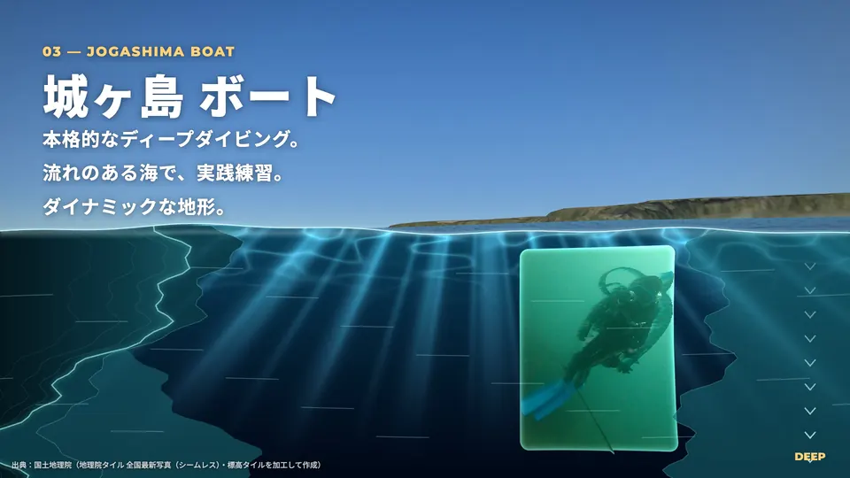
03 — JOGASHIMA BOAT本格的なディープと、ダイナミックな地形。
深く落ちていく岩壁と、流れのある海。ステップアップしたい方の実践練習にも。
レンタル器材が必要なコースは、器材代まで入れた総額で表示しています。当日になって増える費用はありません。
¥19,800
レンタル器材込み。追加の1ダイブは¥6,600。
体験ダイビングを見る ライセンス取得総額¥64,900
講習費¥53,900（eラーニング・実習費・申請料・保険込み）＋レンタル器材2日分。
講習の流れを見る ステップアップ総額¥70,800
講習費¥59,800（ボート2本の乗船料込み）＋レンタル器材2日分。
アドバンスを見る ブランクがある方¥19,800
ガイド・タンク・ウエイト・施設使用料・保険込み。レンタル器材別。
リフレッシュを見る Cカードをお持ちの方ビーチ2本¥13,200
ボート2本 ¥19,800
ガイド・タンク・ウエイト・施設使用料・保険込み。レンタル器材別。
プランと料金を見る ダイビング以外大人¥7,700
子ども（小〜中学生）¥5,500
器材・ライフジャケット込み。
スノーケリングを見るレンタル器材はフルセット1日¥5,500。マスクなどの単品レンタルもあります。
キャンセルは開催日の前日17時まで無料。海況不良で当方が中止した場合はいただきません。
日程変更は空きがあれば無料。OWDとAOWをまとめて受講すると講習費¥5,000引き。
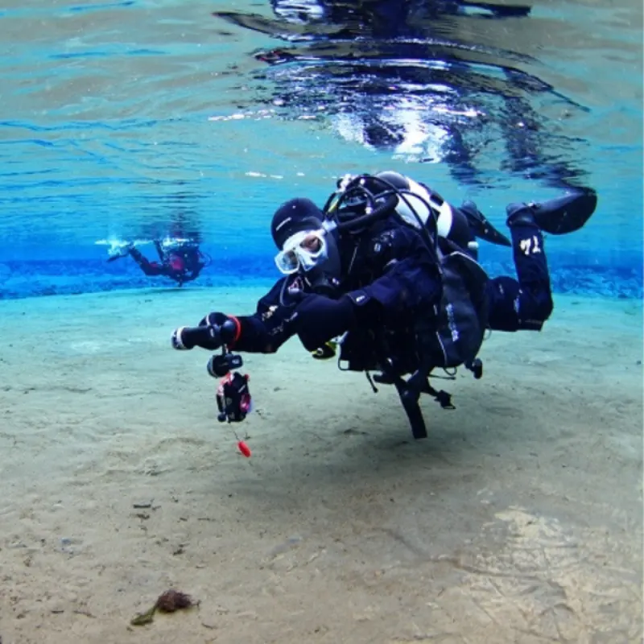
PADI COURSE DIRECTOR代表 吉田 哲司インストラクターを育てることができる、PADIのプロ資格の最高位
1997年、オーストラリアでプロダイバーの資格を取得して以来、初心者の方からプロを目指す方まで、一貫してダイビング「講習」を中心に活動してきました。三浦の海は約14年。季節や海況で表情が変わる城ヶ島・宮川湾を見てきました。
水中での呼吸に慣れる速さも、不安に感じることも人それぞれ。様子を見ながら、無理なく進めます。
風と波を見て、城ヶ島か宮川湾か、その日に合った場所をご案内します。
インストラクター1名につき最大4名。目が届くから、質問もしやすい雰囲気です。
三浦の海で撮った、講習や体験ダイビングの一枚です。
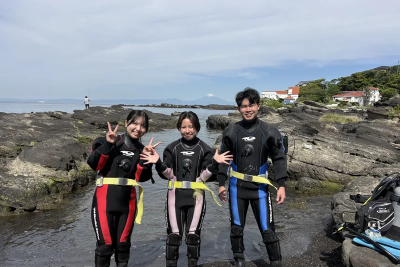
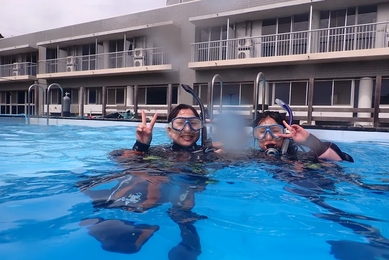
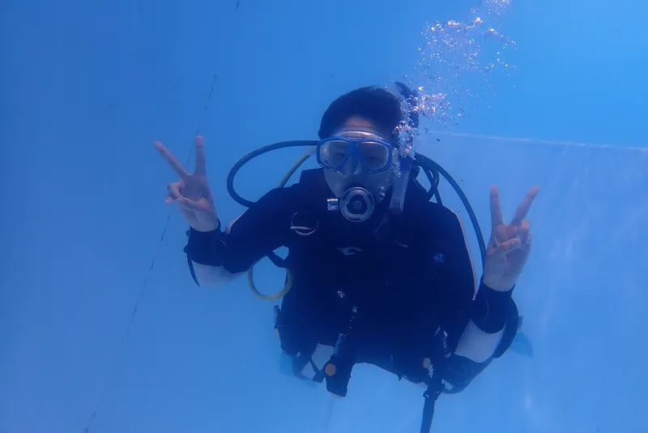
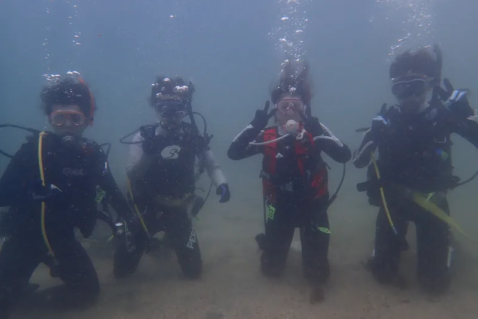
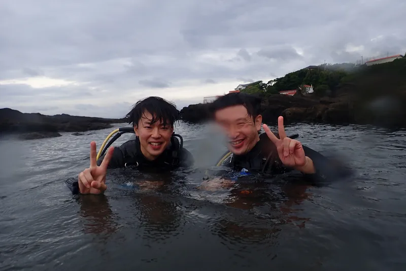
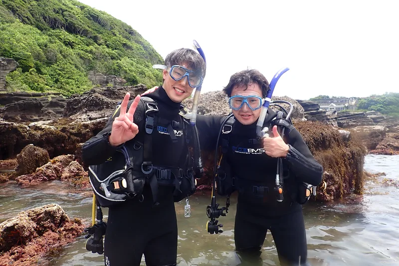
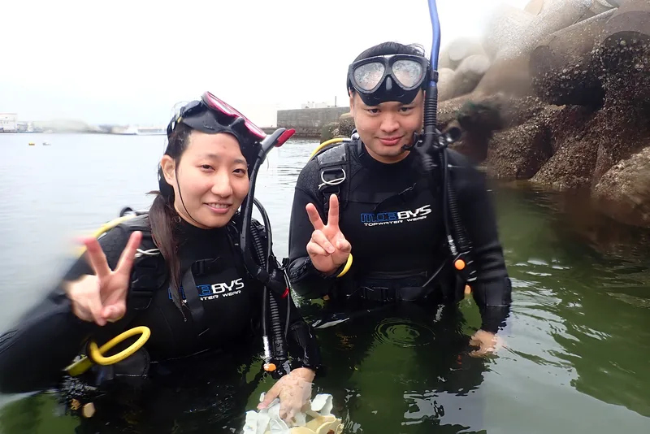
泳ぎに自信がなく、最初は水中で呼吸するのも緊張しました。急がずに何度も説明してもらえたので、最後は落ち着いて海を楽しめました。
60歳を過ぎてからの挑戦でしたが、自分のペースに合わせてもらえて楽しめました。今ではファンダイビングにも通っています。
10年ぶりのダイビングでしたが、丁寧なブリーフィングで安心して潜れました。三浦の海は想像以上にきれいで、また来たいです！
「気になってはいるけど、調べるほどでもない」——そのくらいの温度でも読めるように、いちばん伝えたいことをまんがにしました。
1話3分ほど、スマホで縦に読めます。もちろん無料です。
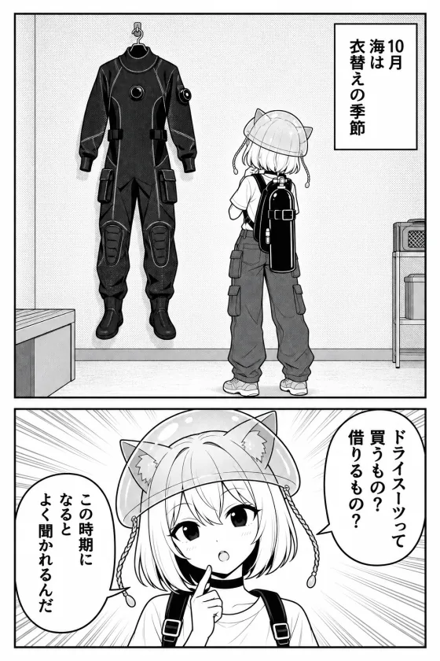
EP.23・全12ページ 冬の海を、自分の一着で。 ドライスーツは買う？借りる？——借りても潜れる。それでも、合う一着を作って、その一着で練習するのがいちばんの近道。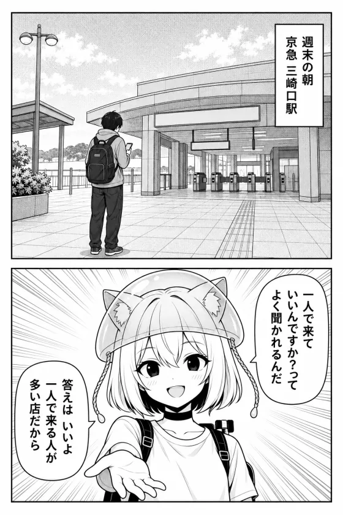
EP.22・全12ページ ひとりで来ていいの？ 一人で来る人が多い店だから、一人で来ていい。当日はインストラクターがそばにつき、少人数で進み、駅からは無料送迎——一人参加の不安に、店の実際の運用で答えます。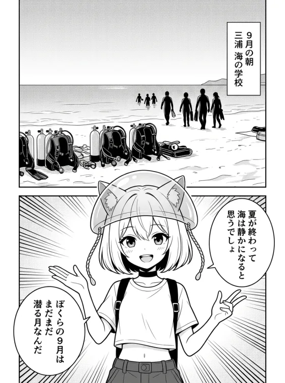
EP.21・全12ページ ウェットの海を、潜り切ろう。ドライの支度は、いまのうちに 9月はまだ潜る月。10月に入るとドライへ衣替え——冬も潜るなら、自分に合うドライの支度はいまのうちに。海に行かない日も、海となかよく。
毎日の一歩を楽しむ歩数計、1日1枚の海のタロット（占い）、ガチャで出会う海のなかま図鑑。相棒になったなかまが、あなたの日常にもやってきます。
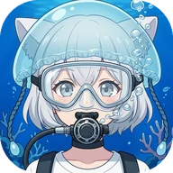
潜った日の記録・写真・出会った生き物・Cカード・器材を、ぜんぶ手のひらに。海の学校がつくりました。
ダイビングのはじめ方、セルフダイビング、60代からの入門、ブランクからの復活まで。
三浦周辺の天気・午前中（9〜13時）の風・波から、潜りやすさを自動で判定しています。気になる日を押すと、その日の空きをすぐに聞けます。
天気データを読み込み中…
※判定はあくまで目安です。実際の開催は、当日の海況をスタッフが確認して判断します。
空き日程、コース選び、泳げない不安、持ち物——質問だけでも大丈夫です。
営業時間 9:00〜16:00（不定休） 京急三崎口駅から無料送迎（要予約） 開催場所・集合場所はご予約時にご案内 キャンセルは前日17時まで無料
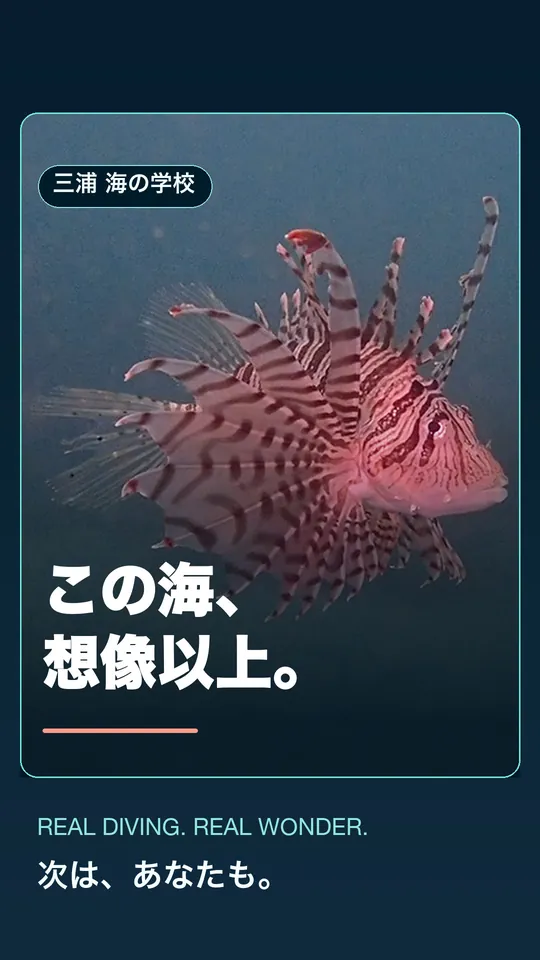
潜った日の海の様子、出会った生き物、講習の風景を配信しています。雰囲気を知るのにいちばんの近道です。
三浦 海の学校は、神奈川県三浦市・三浦半島で活動する初心者向けのダイビングスクールです。城ヶ島と宮川湾を中心に、スクーバダイビング（スキューバダイビング）の体験ダイビング、PADIライセンス（Cカード）取得講習、アドバンスやスペシャルティなどのステップアップ講習、ブランクのある方のリフレッシュダイビング、ファンダイビング、スノーケリングをご案内しています。
代表インストラクターの吉田 哲司はPADIコースディレクター。1997年にオーストラリアでプロダイバー資格を取得して以来、講習を中心に活動し、三浦の海では約14年の経験があります。インストラクター1名につき最大4名の少人数制で、泳ぎが苦手な方、一人参加の方、久しぶりに潜る方も、一人ひとりのペースに合わせて進めます。
京急三崎口駅から開催地までは無料送迎（要予約）。東京・横浜・横須賀方面から日帰りで参加でき、神奈川でダイビングライセンスを取りたい方にもおすすめです。ご予約・ご相談は公式LINEまたはお問い合わせフォームから。